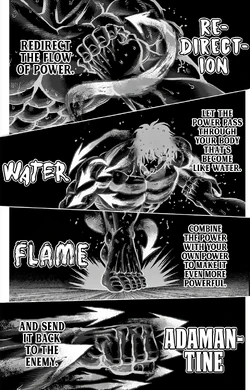
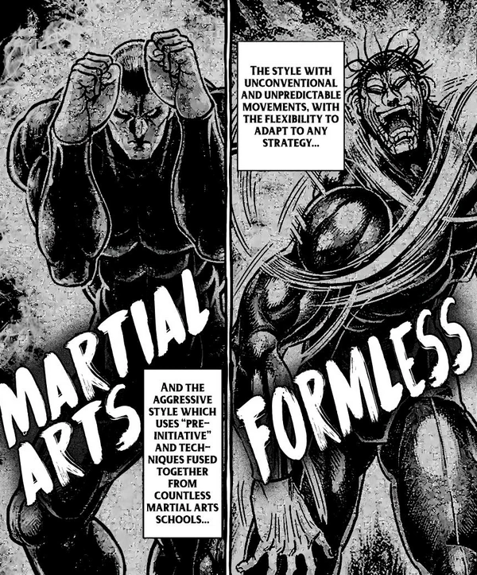
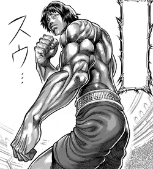

| Image | Description | Fighting Style |
|---|---|---|
 |
Tokita Ohma Known as "The Asura", Tokita Ohma is the main character of the series. Bearing the known fighting style of Niko Style, he shows off his strength, IQ, technique, and tenacity on his debut. Fighting for his goal of proving himself as strongest, even with every fight he shows off the sheer will and mental fortitude he dawns and fights through his opponents to the very end, even with every injury he gains from each round. As he represents Yamashita Trading Co., he climbs his way up through the tournament and leaving an impression with his name, soon becoming a known top-tier fighter within the underground world. |
The Niko Style  |
 |
Kure Raian "The Devil" steps into the fray. Kure Raian is one of many sons under the Kure family and is known as the "problem child" the "black sheep" of the family due to his rebellious nature and puissance With his family are of the assassin and mercenary kind, while members follow discipline and follow their code of conduct Raian is far more different with his way of doing things, preferring to embrace his bloodlust and acting like a brute. While representing Under Mount Inc., he isn't afraid to show off his true colors within his first round of the tournament and nearly took the life of another fighter named Mokichi Robinson. |
Kure Clan Style |
 |
Kanoh Agito "The Fifth Fang of Metsudo" is also called the King of Kengan due to being regarded as the number 1 strongest fighter within the Kengan fighter ranks. Fighting under the at the time Chairman of the Kengan Association, Katahara Metsudo, he represented Dainippon Bank and displayed his full strength in the rounds to come. His ways of fighting were unorthodox, holding the strange ability to switch between styles like Martial Arts, his made up art with the name "Formless", and combining leading to Martial Arts + Formless. |
Martial Arts and Formless  |
 |
Gaolang Wongsawat The "Thai God of War" Gaolan Wongsawat has gone through a journey within his fight career. While only taking on two striking martial arts, he has practiced Muay Thai ever since he was 5 and presumably switched over to boxing for 3 years. He quickly became known as the best boxer in the world, becoming the Unified Heavyweight Champion of boxing and entered the Kengan Tournament and representing Yazu Trading. Along with that, he represents his country for himself and the Ruler of Thailand, Rama XIII. He shows off his fighting capabilities with his Flicker Stance from boxing and Muay Thai during the upcoming rounds. |
Flicker Stance  |
 |
Hatsumi Sen This man is completely irresponsible, laid back and cool, yet is said to be a top class fighter within the Kengan Association. Known as the "Floating Cloud", Hatsumi Sen has a loss of 15 fights, but the reasons are was because 4 were skipped, 2 were forgotten, and 9 were overslept. Despite this, he's still infamous thanks to his skill and technique and Hatsumi-Styled Aikido. Even though he is relaxed and calm, he will put his all onto fights which he knows will be trouble, like the second and third rounds he would participate in in the tournament. He represents the Nogi Group and proves his worth despite looking like the chillest man you could walk upon. |
Hatsumi-Style Aikido |